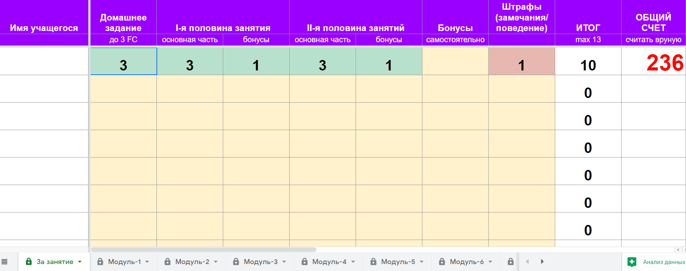
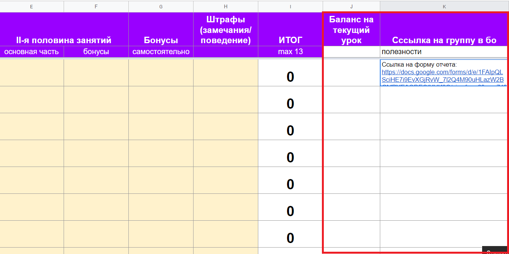
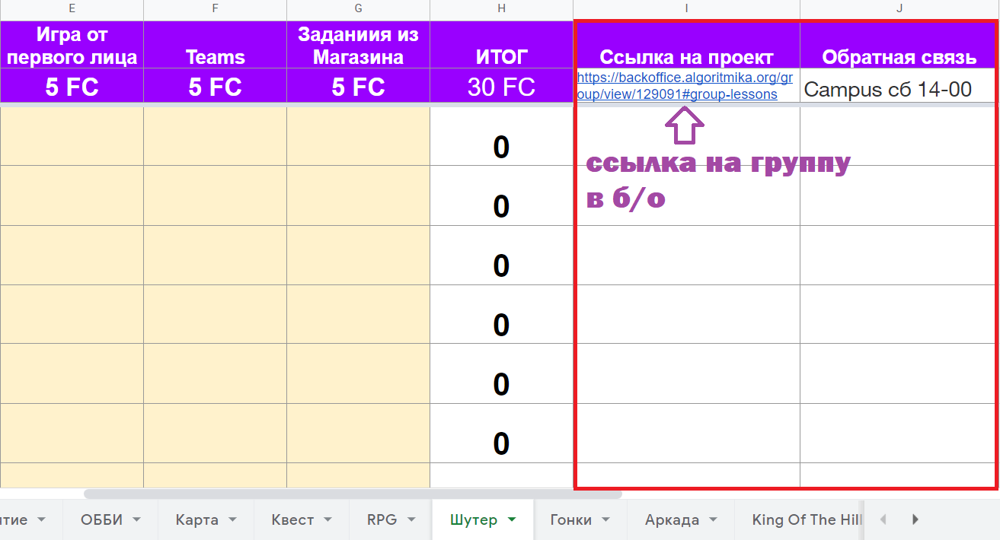
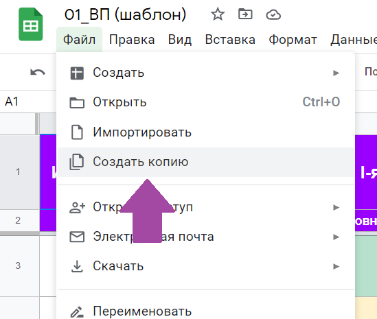
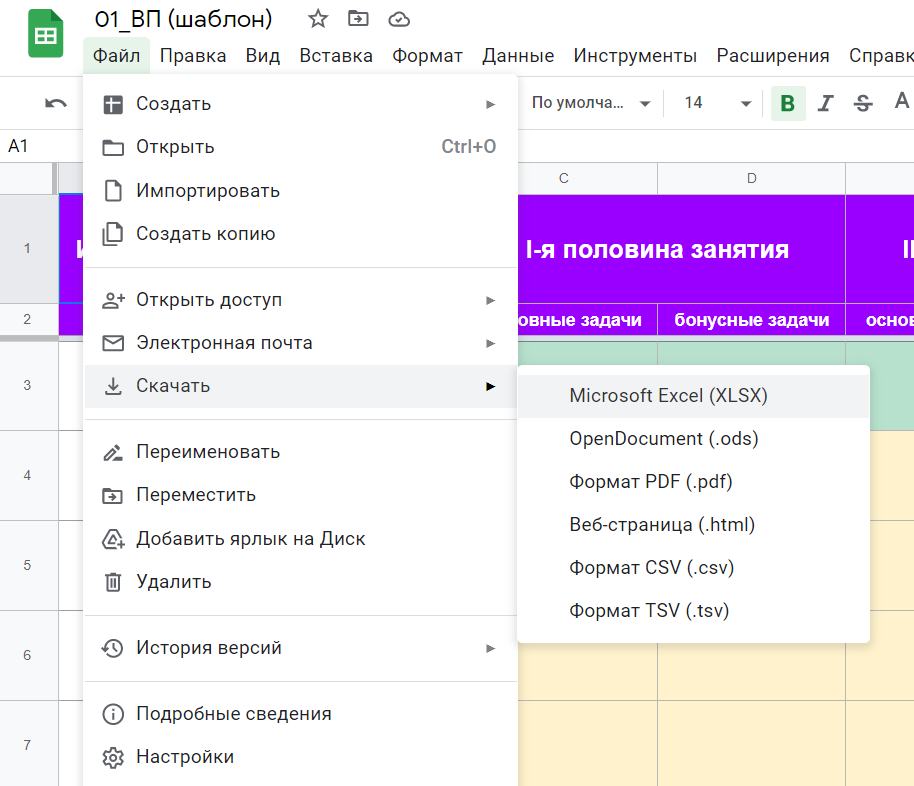
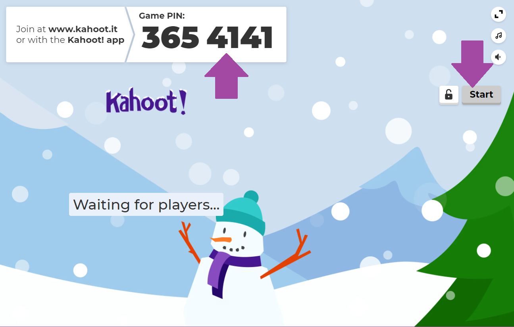

a
Инструкции по работе с дополнительными материалами
Основы логики и программирования
Ресурсный сайт по Основам логики и программирования
Ниже приведена подробная инструкция по работе с сайтом для ОЛиП
Дополнительный ресурсный сайт, призванный разнообразить занятия по курсу ОЛиП разделен по модулям и по темам. Содержит интерактивные задания и игры
1.
Можно использовать на занятиях, как полноценное объяснение нового материала
На каждом компьютере или планшете в браузерах рекомендуется заранее создать ссылки на главных страницах, чтобы можно было быстро подключить сайт для работы в нем детей: sadiyarur.github.io/prog4kids
2.
3.
Этот ресурс также используется, если ребенок справляется с задачами на платформе Алгоритмики быстрее или, если он пришел на занятие раньше начала урока
Не позволяйте детям заранее проходить непройденные темы! Если вы хотите чем-то занять ребенка, то, начиная со второго модуля все задания под номером 5 являются бонусными играми или задачами. Их дети могут поиграть. Также с заданием номер 4 второго модуля.
Нельзя также заранее давать решать самое последнее задание последнего модуля - это задание для выпускного занятия!
Работа с таблицами по проектным
Как работать с таблицами по начислению фанкоинов:
Таблицы рекомендуется периодически демонстрировать во время занятия, чтобы ученики видели свой прогресс, для большей мотивации выполнять задания. Не забывайте сразу после занятия начислять фанкоины на счет ученика в банке Алгоритмики (смотрите ниже инструкцию как работать с банком)
1. Таблица для использования на каждом занятии. Максимальное число начислений - 13 фанкоинов. Вкладка в Таблице "Для занятий". Каждый пункт заполняется преподавателем на свое усмотрение при выполнении учеником задач на платформе. Подсчет проводится автоматически

2. В таблице представлены дополнительные графы для полезных ссылок. Ссылка на форму отчета по обратной связи "Точки контроля_проекты учеников" уже вставлена в каждую таблицу. Так же вам вручную можно добавить ссылку на группу в бо и название группы в бо

3. Таблица для проектных работ. В каждом столбце есть пункты, которые должны быть в проекте. Преподаватель заполняет их в процессе проверки. Подсчет общей суммы за проект производится автоматически. Ученик может не выполнить некоторые пункты, но, их количество не должно превышать 2-х. Преподаватель на свое усмотрение может начислять лишь часть суммы за пункт, если ученик недовыполнил эту часть, хотя и начинал его
4. Так же предусмотрены графы по обратной связи и ссылкам по проектным работам в конце каждого модуля. После этого остается только копировать всю информацию с таблиц в форму отчета

Как использовать таблицы в режиме онлайн:
Таблицы можно скопировать в свой Google-Диск. Для этого нужно иметь свою учетную запись гугл аккаунта и скопировать файлы в него. Создавайте отдельную таблицу для каждой Вашей группы, переименовав таблицу соответствующим образом
Для использования файла в своем диске нажмите "Файл" => "Создать копию"

Ввести название группы и нажать "ОК"

Как использовать таблицы в режиме оффлайн:
Таблицы можно скопировать на свой персональный компьютер при условии, что есть вероятность, что Ваши файлы никто в ней не тронет и они не затеряются
Для использования файла в оффлайн режиме нажмите "Файл" => "Скачать" => "Microsoft Excel (XLSX)"

Kahootы
Инструкция работы в Kahoot:
Дополнительный ресурс Kahoot используется для повторения и закрепления пройденного материала в интересной и увлекательной форме. Kahoot - это игровой тест, где дети должны быстро отвечать на вопросы и зарабатывать очки.
Чтобы начать работу нужно открыть сайт по ссылке: https://create.kahoot.it
Зарегистрироваться или зайти в свою учетную запись.
Рекомендуется регистрироваться под учетной записью учителя (Более подробно следуйте указаниям на сайте, включите автоперевод страниц на русский)
Можно создавать как свои кахуты, так использовать и готовые варианты на сайте
Кахуты желательно проводить в начале занятия. Подключать кахуты по пройденной теме для повторения пройденного. В этом случает в презентации к уроку слайды с повторением материала можно пропустить

Как играть в Kahoot:
1. Чтобы начать работу с готовыми кахутами, достаточно нажать на соответствующую тему кахута. Зарегистрироваться, если это требуется.
2. Выбрать вариант игры

3. Дождаться пока учащиеся не подключатся к игре и нажать Start.

4. Для того, чтобы подключиться к игре они должны зайти по другой ссылке: kahoot.it
5. Ввести Game Pin (Гейм Пин) и придумать себе Nickname (Никнеймы):

Инструкция работы с Квизис:
Магазин Алгоритмики
Магазин Алгоритмики и что такое FunCoins (фанкоины)
В Алгоритмике Казахстан принята своя система вознаграждения и мотивации учеников - FunCoins (далее - фанкоины).
Для работы с этой системой преподавателю нужно уметь работать с Банком Алгоритмики (нужно обратиться к администратору). Необходимо каждому ученику завести счет в этом банке. Далее следует каждое занятие проверять выполняемость задач и начислять за это награды. Так же эту систему рекомендуется использовать при проверке проектных работ (смотрите Таблицы по начислению фанкоинов для каждого отдельного курса)
Рекомендуется использовать фанкоины для занятий на курсах, предназначенных для младшей и средней категорий групп. Для старших категорий учеников - на усмотрение преподавателя
За накопленные фанкоины ученики могут приобрести подарки в Магазине Алгоритмики (смотрите подробнее по Ссылке на магазин)
Инструкция по работе с банком Алгоритмики
Банк Алгоритмики - еще один способ мотивации детей на занятиях Алгоритмики Казахстан
Преподавателю следует вести учет заработанных фанкоинов вручную на отчетных таблицах по проектным работам